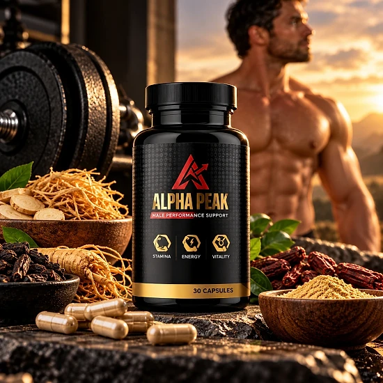
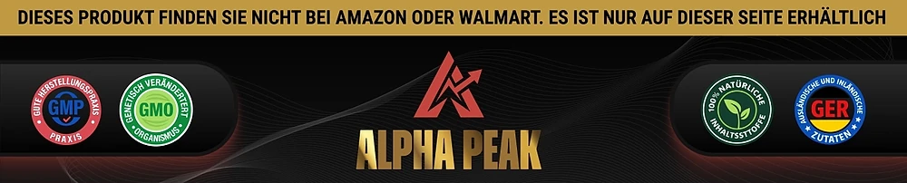

Was ist Alpha Peak und wie wirkt es?
Alpha Peak ist ein Nahrungsergänzungsmittel in Kapselform für Männer. Auf dem Etikett steht „Male Performance Support“, und die Symbole auf der Flasche nennen Ausdauer, Energie und Vitalität als Schwerpunkte. Auf den Produktbildern der offiziellen Website heißt die Linie außerdem „Peak Enhancement Performance“, mit Hinweisen auf natürliche Inhaltsstoffe und Herz-Kreislauf-Gesundheit.
Jede Flasche enthält 30 Kapseln, und die offizielle Website rechnet eine Flasche als Vorrat für 30 Tage. Das Produkt wird über Digistore24 verkauft; im Bestellformular wird es als Nahrungsergänzungsmittel zum Einnehmen beschrieben. Als Anbieter nennt die Website Alpha Peak Research.
Wie wirkt es? Die deutsche Seite der Marke besteht vor allem aus einem Video, und eine schriftliche Erklärung des Wirkprinzips gibt es dort nicht. Auch eine Zutatenliste oder ein Supplement-Facts-Etikett ist auf der Website nicht veröffentlicht. Wir können deshalb nicht sagen, welche Stoffe in welcher Menge enthalten sind, und erfinden hier keine Angaben.
Laut dem Gütesiegel-Banner der Marke wird Alpha Peak nach GMP-Standards (Gute Herstellungspraxis) hergestellt, und das Banner nennt 100 % natürliche Inhaltsstoffe aus dem In- und Ausland. Das sind Angaben der Marke, die wir nicht unabhängig prüfen konnten.
Wichtig ist auch die Erwartung an das Ergebnis. Die Rückgabebedingungen der Marke empfehlen, das Produkt mindestens drei Monate zu verwenden, bevor man ein Urteil fällt. Ein Sofort-Effekt wird dort also nicht versprochen, und die Ergebnisse können von Person zu Person unterschiedlich sein.
Wer sich für Alpha Peak interessiert, sollte sich vor allem das Etikett auf der Flasche ansehen, sobald das Paket ankommt. Dort stehen die Zutaten, die Verzehrempfehlung und die Warnhinweise, die auf der Website fehlen.
Alpha Peak ist ein Nahrungsergänzungsmittel. Es ist nicht dazu bestimmt, Krankheiten zu diagnostizieren, zu behandeln, zu heilen oder ihnen vorzubeugen, und es ersetzt weder ärztlichen Rat noch eine verordnete Behandlung.
Alpha Peak Dosierung
Die offizielle Website nennt keine schriftliche Verzehrempfehlung. Sie gibt nur an, dass eine Flasche 30 Kapseln enthält und für 30 Tage reicht. Das entspricht einer Kapsel pro Tag, doch maßgeblich ist immer die Anweisung auf dem Etikett der Flasche.
Nehmen Sie die Kapsel am besten jeden Tag ungefähr zur gleichen Zeit mit einem Glas Wasser ein, zum Beispiel zum Frühstück. Eine feste Routine hilft, regelmäßig zu bleiben, und Regelmäßigkeit ist bei Nahrungsergänzungsmitteln wichtiger als die genaue Uhrzeit.
Überschreiten Sie die auf dem Etikett angegebene Menge nicht. Wenn Sie Medikamente einnehmen, insbesondere für Herz, Blutdruck oder Blutverdünnung, oder wenn Sie eine Erkrankung haben, sprechen Sie vor der Einnahme mit Ihrem Arzt. Da die Zutaten auf der Website nicht genannt werden, ist dieser Schritt hier besonders sinnvoll.
Die Marke empfiehlt in ihren Rückgabebedingungen eine Anwendung von mindestens drei Monaten, bevor man entscheidet, ob das Produkt passt. Die Wirkung ist individuell verschieden, und Geduld gehört zu einer realistischen Erwartung.
Alpha Peak ergänzt einen gesunden Lebensstil mit ausgewogener Ernährung, Bewegung und ausreichend Schlaf, ersetzt ihn aber nicht. Bewahren Sie die Flasche gut verschlossen, kühl, trocken und außerhalb der Reichweite von Kindern auf.
Alpha Peak – Rückerstattung
Alpha Peak wird laut offizieller Website mit einer 60-Tage-Zufriedenheitsgarantie verkauft. Die Frist beginnt laut Rückgabebedingungen mit dem Tag, an dem das Paket geliefert wurde. Wer nicht zufrieden ist, kann innerhalb dieser Zeit eine Rückerstattung beantragen.
Schritt 1 – Frist prüfen: Kontrollieren Sie anhand der Sendungsverfolgung, wann Ihre Bestellung zugestellt wurde, und ob Sie sich noch innerhalb der 60 Tage befinden.
Schritt 2 – Support kontaktieren: Schreiben Sie dem Kundenservice eine E-Mail mit dem Betreff „Refund Request“. Die Kontaktseite nennt support@thealphapeak.com, die Rückgabeseite dagegen contact@vital-roots.site; als Telefonnummer wird +1 (814) 300-8171 angegeben.
Schritt 3 – Flaschen zurücksenden: Senden Sie alle Flaschen zurück, egal ob leer oder voll, geöffnet oder nicht, zusammen mit dem Lieferschein und einer Notiz mit Ihrem Namen, Ihrer E-Mail-Adresse und der Bestellnummer. Die Rücksendeadresse lautet: c/o Alpha Peak, Kleine Esch 669, 2841 MK Moordrecht, Niederlande. Die Kosten der Rücksendung trägt der Kunde.
Schritt 4 – Erstattung abwarten: Laut Website wird die Erstattung nach Eingang des Pakets bearbeitet und per E-Mail bestätigt. Bis der Betrag auf der Kreditkartenabrechnung erscheint, vergehen je nach Bank etwa 5 bis 10 Tage.
Lesen Sie die vollständigen Bedingungen auf der offiziellen Website, bevor Sie bestellen, damit Sie jede Voraussetzung kennen. Bewahren Sie außerdem die Bestellbestätigung und die Sendungsnummer der Rücksendung gut auf.
Alpha Peak – Wo kaufen?
Alpha Peak wird über seine offizielle Website thealphapeak.com bestellt, und die Zahlung läuft über Digistore24. Laut dem Banner der Marke ist das Produkt weder bei Amazon noch bei Walmart erhältlich, sondern nur über die eigene Seite.
Flaschen von unbekannten Händlern können identisch aussehen, doch nichts erlaubt es, ihre Herkunft oder ihre Lagerung zu überprüfen. Für ein Nahrungsergänzungsmittel ist das eine echte Frage der Qualität und Sicherheit, und ein Kauf außerhalb der offiziellen Website ist möglicherweise nicht durch die 60-Tage-Garantie abgedeckt.
Deshalb bestellen die meisten Käufer Alpha Peak direkt an der Quelle. Die offizielle Website sichert den Zugang zum authentischen Produkt, zum Kundenservice und zur vollständigen Garantie.
Achten Sie beim Bezahlen darauf, dass Sie sich auf der offiziellen Alpha Peak-Website befinden, um jede Fälschung zu vermeiden. Prüfen Sie die Adresse in der Browserzeile und den Bestellvorgang über Digistore24, denn nur so gelten die Garantie und der Kundenservice der Marke ohne Einschränkungen. Bei Fragen zur Bestellung hilft der Kundenservice per E-Mail weiter.
Um sicherzugehen, dass Sie das Originalprodukt erhalten, besuchen die meisten Nutzer die offizielle Website.
Ist Alpha Peak Betrug?
Nach den Informationen der offiziellen Website scheint Alpha Peak kein Betrug zu sein. Es handelt sich um ein echtes Nahrungsergänzungsmittel, das über Digistore24 verkauft wird, eine etablierte Plattform, und es richtet sich an Männer, die Ausdauer, Energie und Vitalität unterstützen möchten.
Die Website nennt eine 60-Tage-Garantie, eine Rücksendeadresse in den Niederlanden, eine Telefonnummer und ein schrittweises Verfahren für die Rückerstattung.
Es gibt aber deutliche Schwachpunkte. Die Website veröffentlicht keine Zutatenliste und kein Etikett, und auch die Dosierung steht nicht schriftlich da; alle Erklärungen stecken im Video. Ohne diese Angaben lässt sich die Formel nicht beurteilen.
Außerdem sind die Kontaktangaben uneinheitlich: Die Kontaktseite nennt eine andere E-Mail-Adresse als die Rückgabe- und Versandseiten, und auf den Seiten tauchen Namen auf, die zu anderen Produkten gehören. Die Verkaufsseite arbeitet zudem mit Hinweisen wie „Solange der Vorrat reicht“, die nicht zur Eile drängen sollten.
Unser Rat: Lesen Sie das Etikett sorgfältig, sobald die Flasche ankommt, bewahren Sie die Sendungsverfolgung auf und sprechen Sie mit Ihrem Arzt, wenn Sie Medikamente einnehmen oder eine Erkrankung haben.
Für Männer, die ein einfaches tägliches Nahrungsergänzungsmittel für Energie und Vitalität suchen, kann Alpha Peak eine Option sein, am besten über die offizielle Website bestellt und mit der Garantie im Rücken.
Wer Produktdetails überprüfen oder die aktuelle Verfügbarkeit prüfen möchte, ist auf der offiziellen Alpha Peak-Website am sichersten aufgehoben.

Verfügbarkeit auf der offiziellen Website prüfen
